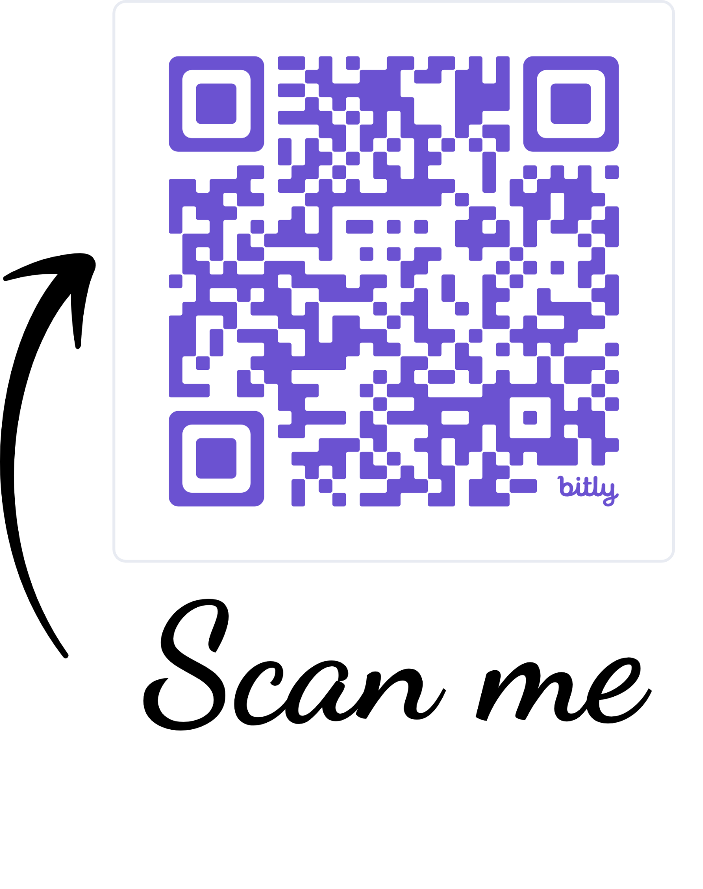

Kali Linux & Windows
Command-line navigation, file permissions and basic network configuration.
ENTRY-LEVEL CYBERSECURITY PROFESSIONAL
I practice network scanning and vulnerability assessment through hands-on labs. I’m looking for an entry-level cybersecurity opportunity where I can apply my knowledge and keep learning.
CYBERSECURITY ENTHUSIAST
Welcome to the demo terminal. Type help to explore.
// INTRODUCTION
Recently completed my Ethical Hacking course at WsCube Tech. Through my own lab setup, I practice network scanning and Vulnerability Assessment and Penetration Testing (VAPT) using Kali Linux, Nmap, Wireshark and Metasploit.
I am currently looking for an entry-level opportunity in cybersecurity where I can apply my knowledge, develop practical skills and learn from experienced security professionals.
// TECHNICAL EXPERTISE
Command-line navigation, file permissions and basic network configuration.
TCP/IP, OSI Model, IP addressing, DNS, common ports and services.
Network discovery, port scanning, service version detection and OS detection.
Vulnerability assessment and exploitation concepts in authorized lab environments.
Banner grabbing, port listening and basic network connections in lab environments.
Packet capturing, network traffic analysis and inspecting TCP, HTTP and FTP protocols.
// HANDS-ON EXPERIENCE
Conducted a vulnerability assessment and penetration testing exercise in a controlled virtual lab using Kali Linux and Metasploitable 2.
Scanned the target machine using Nmap to identify open ports and running service versions.
Assessed the known vsftpd 2.3.4 backdoor vulnerability on port 21 using Metasploit in the isolated lab and documented the observed access.
Examined the open bind shell service on port 1524 using Netcat and reviewed a misconfigured NFS share on port 2049.
Prepared a VAPT report documenting identified vulnerabilities, risk levels and basic remediation recommendations.
This was a controlled educational lab project, not a real-world client assessment.
// CONTINUOUS LEARNING
Created a virtual lab using Kali Linux and Metasploitable 2 to practice network scanning and VAPT in a controlled environment.
Practicing cybersecurity fundamentals, Linux commands and networking concepts through hands-on virtual labs.
View TryHackMe Profile ↗// BACKGROUND
Course focused on ethical hacking, cybersecurity fundamentals and practical lab work.
Veer Kunwar Singh University, Ara
// PERSONAL STRENGTHS
// COMMUNICATION
// GET IN TOUCH
Interested in cybersecurity opportunities, professional connections and learning experiences. Feel free to reach out.
piyushkumarbbu03@gmail.com
linkedin.com/in/piyushrawat-v2
View my learning profile
github.com/PIYUSHR03
// QUICK ACCESS
Use your phone camera to scan the portfolio QR code.
Open QR destination ↗